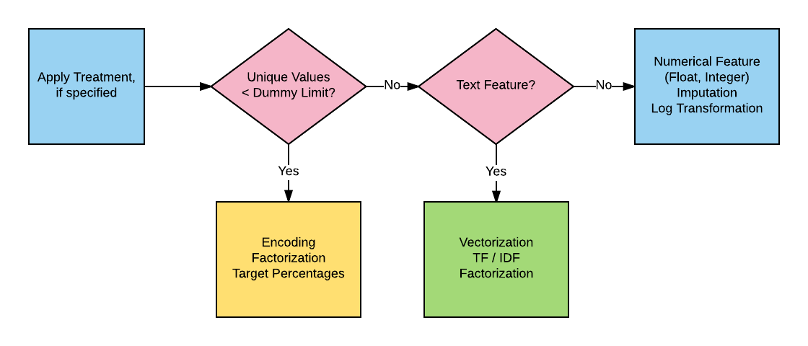
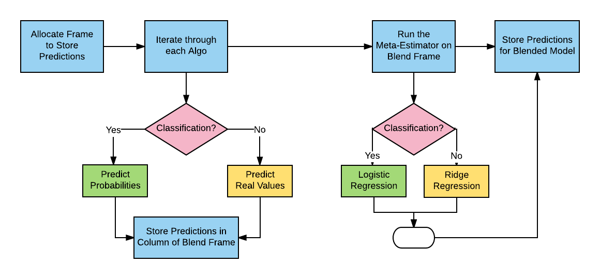
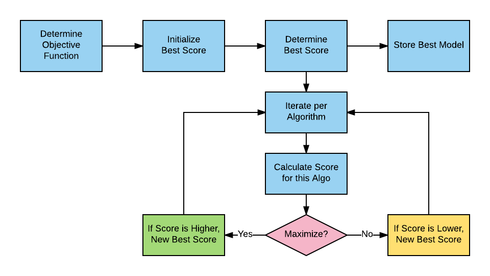

AlphaPy

Model Object Creation
AlphaPy first reads the model.yml file and then displays
the model parameters as confirmation that the file was read
successfully. As shown in the example below, the Random Forest
(RF) and XGBoost (XGB) algorithms are used to build the model.
From the model specifications, a Model object will be
created.
All of the model parameters are listed in alphabetical order.
At a minimum, scan for algorithms, features, model_type,
and target to verify their accuracy, i.e., that you are
running the right model. The verbosity parameter will control
the degree of output that you see when running the pipeline.
[12/30/17 23:17:49] INFO ********************************************************************************
[12/30/17 23:17:49] INFO AlphaPy Start
[12/30/17 23:17:49] INFO ********************************************************************************
[12/30/17 23:17:49] INFO Model Configuration
[12/30/17 23:17:49] INFO No Treatments Found
[12/30/17 23:17:49] INFO MODEL PARAMETERS:
[12/30/17 23:17:49] INFO algorithms = ['RF', 'XGB']
[12/30/17 23:17:49] INFO balance_classes = True
[12/30/17 23:17:49] INFO calibration = False
[12/30/17 23:17:49] INFO cal_type = sigmoid
[12/30/17 23:17:49] INFO calibration_plot = False
[12/30/17 23:17:49] INFO clustering = True
[12/30/17 23:17:49] INFO cluster_inc = 3
[12/30/17 23:17:49] INFO cluster_max = 30
[12/30/17 23:17:49] INFO cluster_min = 3
[12/30/17 23:17:49] INFO confusion_matrix = True
[12/30/17 23:17:49] INFO counts = True
[12/30/17 23:17:49] INFO cv_folds = 3
[12/30/17 23:17:49] INFO directory = .
[12/30/17 23:17:49] INFO extension = csv
[12/30/17 23:17:49] INFO drop = ['PassengerId']
[12/30/17 23:17:49] INFO encoder = <Encoders.factorize: 3>
[12/30/17 23:17:50] INFO esr = 20
[12/30/17 23:17:50] INFO factors = []
[12/30/17 23:17:50] INFO features [X] = *
[12/30/17 23:17:50] INFO feature_selection = False
[12/30/17 23:17:50] INFO fs_percentage = 50
[12/30/17 23:17:50] INFO fs_score_func = <function f_classif at 0x112f1dd90>
[12/30/17 23:17:50] INFO fs_uni_grid = [5, 10, 15, 20, 25]
[12/30/17 23:17:50] INFO grid_search = True
[12/30/17 23:17:50] INFO gs_iters = 50
[12/30/17 23:17:50] INFO gs_random = True
[12/30/17 23:17:50] INFO gs_sample = False
[12/30/17 23:17:50] INFO gs_sample_pct = 0.200000
[12/30/17 23:17:50] INFO importances = True
[12/30/17 23:17:50] INFO interactions = True
[12/30/17 23:17:50] INFO isomap = False
[12/30/17 23:17:50] INFO iso_components = 2
[12/30/17 23:17:50] INFO iso_neighbors = 5
[12/30/17 23:17:50] INFO isample_pct = 10
[12/30/17 23:17:50] INFO learning_curve = True
[12/30/17 23:17:50] INFO logtransform = False
[12/30/17 23:17:50] INFO lv_remove = True
[12/30/17 23:17:50] INFO lv_threshold = 0.100000
[12/30/17 23:17:50] INFO model_type = <ModelType.classification: 1>
[12/30/17 23:17:50] INFO n_estimators = 51
[12/30/17 23:17:50] INFO n_jobs = -1
[12/30/17 23:17:50] INFO ngrams_max = 3
[12/30/17 23:17:50] INFO numpy = True
[12/30/17 23:17:50] INFO pca = False
[12/30/17 23:17:50] INFO pca_inc = 1
[12/30/17 23:17:50] INFO pca_max = 10
[12/30/17 23:17:50] INFO pca_min = 2
[12/30/17 23:17:50] INFO pca_whiten = False
[12/30/17 23:17:50] INFO poly_degree = 5
[12/30/17 23:17:50] INFO pvalue_level = 0.010000
[12/30/17 23:17:50] INFO rfe = True
[12/30/17 23:17:50] INFO rfe_step = 3
[12/30/17 23:17:50] INFO roc_curve = True
[12/30/17 23:17:50] INFO rounding = 2
[12/30/17 23:17:50] INFO sampling = False
[12/30/17 23:17:50] INFO sampling_method = <SamplingMethod.under_random: 12>
[12/30/17 23:17:50] INFO sampling_ratio = 0.500000
[12/30/17 23:17:50] INFO scaler_option = True
[12/30/17 23:17:50] INFO scaler_type = <Scalers.standard: 2>
[12/30/17 23:17:50] INFO scipy = False
[12/30/17 23:17:50] INFO scorer = roc_auc
[12/30/17 23:17:50] INFO seed = 42
[12/30/17 23:17:50] INFO sentinel = -1
[12/30/17 23:17:50] INFO separator = ,
[12/30/17 23:17:50] INFO shuffle = False
[12/30/17 23:17:50] INFO split = 0.400000
[12/30/17 23:17:50] INFO submission_file = gender_submission
[12/30/17 23:17:50] INFO submit_probas = False
[12/30/17 23:17:50] INFO target [y] = Survived
[12/30/17 23:17:50] INFO target_value = 1
[12/30/17 23:17:50] INFO treatments = None
[12/30/17 23:17:50] INFO tsne = False
[12/30/17 23:17:50] INFO tsne_components = 2
[12/30/17 23:17:50] INFO tsne_learn_rate = 1000.000000
[12/30/17 23:17:50] INFO tsne_perplexity = 30.000000
[12/30/17 23:17:50] INFO vectorize = False
[12/30/17 23:17:50] INFO verbosity = 0
[12/30/17 23:17:50] INFO Creating directory ./data
Data Ingestion
Data are loaded from both the training file and the test file. Any features that you wish to remove from the data are then dropped. Statistics about the shape of the data and the target variable proportions are logged.
[12/30/17 23:17:50] INFO Creating directory ./model
[12/30/17 23:17:50] INFO Creating directory ./output
[12/30/17 23:17:50] INFO Creating directory ./plots
[12/30/17 23:17:50] INFO Creating Model
[12/30/17 23:17:50] INFO Calling Pipeline
[12/30/17 23:17:50] INFO Training Pipeline
[12/30/17 23:17:50] INFO Loading Data
[12/30/17 23:17:50] INFO Loading data from ./input/train.csv
[12/30/17 23:17:50] INFO Found target Survived in data frame
[12/30/17 23:17:50] INFO Labels (y) found for Partition.train
[12/30/17 23:17:50] INFO Loading Data
[12/30/17 23:17:50] INFO Loading data from ./input/test.csv
[12/30/17 23:17:50] INFO Target Survived not found in Partition.test
[12/30/17 23:17:50] INFO Saving New Features in Model
[12/30/17 23:17:50] INFO Original Feature Statistics
[12/30/17 23:17:50] INFO Number of Training Rows : 891
[12/30/17 23:17:50] INFO Number of Training Columns : 11
[12/30/17 23:17:50] INFO Unique Training Values for Survived : [0 1]
[12/30/17 23:17:50] INFO Unique Training Counts for Survived : [549 342]
Feature Processing
There are two stages to feature processing. First, you may want to transform a column of a dataframe into a different format or break up a feature into its respective components. This is known as a treatment, and it is a one-to-many transformation. For example, a date feature can be extracted into day, month, and year.
The next stage is feature type determination, which applies to all features, regardless of whether or not a treatment has been previously applied. The unique number of a feature’s values dictates whether or not that feature is a factor. If the given feature is a factor, then a specific type of encoding is applied. Otherwise, the feature is generally either text or a number.
{kind=link}
In the example below, each feature’s type is identified along
with the unique number of values. For factors, a specific type
of encoding is selected, as specified in the model.yml
file. For text, you can choose either count vectorization and
TF-IDF or just plain factorization. Numerical features have
both imputation and log-transformation options.
[12/30/17 23:17:50] INFO Number of Testing Rows : 418
[12/30/17 23:17:50] INFO Number of Testing Columns : 11
[12/30/17 23:17:50] INFO Original Features : Index(['PassengerId', 'Pclass', 'Name', 'Sex', 'Age', 'SibSp', 'Parch',
'Ticket', 'Fare', 'Cabin', 'Embarked'],
dtype='object')
[12/30/17 23:17:50] INFO Feature Count : 11
[12/30/17 23:17:50] INFO Applying Treatments
[12/30/17 23:17:50] INFO No Treatments Specified
[12/30/17 23:17:50] INFO New Feature Count : 11
[12/30/17 23:17:50] INFO Dropping Features: ['PassengerId']
[12/30/17 23:17:50] INFO Original Feature Count : 11
[12/30/17 23:17:50] INFO Reduced Feature Count : 10
[12/30/17 23:17:50] INFO Writing data frame to ./input/train_20171230.csv
[12/30/17 23:17:50] INFO Writing data frame to ./input/test_20171230.csv
[12/30/17 23:17:50] INFO Creating Cross-Tabulations
[12/30/17 23:17:50] INFO Original Features : Index(['Pclass', 'Name', 'Sex', 'Age', 'SibSp', 'Parch', 'Ticket', 'Fare',
'Cabin', 'Embarked'],
dtype='object')
[12/30/17 23:17:50] INFO Feature Count : 10
[12/30/17 23:17:50] INFO Creating Count Features
[12/30/17 23:17:50] INFO NA Counts
[12/30/17 23:17:50] INFO Number Counts
[12/30/17 23:17:50] INFO New Feature Count : 21
[12/30/17 23:17:50] INFO Creating Base Features
[12/30/17 23:17:50] INFO Feature 1: Pclass is a numerical feature of type int64 with 3 unique values
[12/30/17 23:17:50] INFO Feature 2: Name is a text feature [12:82] with 1307 unique values
[12/30/17 23:17:50] INFO Feature 2: Name => Factorization
[12/30/17 23:17:50] INFO Feature 3: Sex is a text feature [4:6] with 2 unique values
[12/30/17 23:17:50] INFO Feature 3: Sex => Factorization
[12/30/17 23:17:50] INFO Feature 4: Age is a numerical feature of type float64 with 99 unique values
[12/30/17 23:17:50] INFO Feature 5: SibSp is a numerical feature of type int64 with 7 unique values
[12/30/17 23:17:50] INFO Feature 6: Parch is a numerical feature of type int64 with 8 unique values
[12/30/17 23:17:50] INFO Feature 7: Ticket is a text feature [3:18] with 929 unique values
[12/30/17 23:17:50] INFO Feature 7: Ticket => Factorization
[12/30/17 23:17:50] INFO Feature 8: Fare is a numerical feature of type float64 with 282 unique values
[12/30/17 23:17:50] INFO Feature 9: Cabin is a text feature [1:15] with 187 unique values
[12/30/17 23:17:50] INFO Feature 9: Cabin => Factorization
[12/30/17 23:17:50] INFO Feature 10: Embarked is a text feature [1:1] with 4 unique values
[12/30/17 23:17:50] INFO Feature 10: Embarked => Factorization
[12/30/17 23:17:50] INFO Feature 11: nan_count is a numerical feature of type int64 with 3 unique values
[12/30/17 23:17:50] INFO Feature 12: count_0 is a numerical feature of type int64 with 4 unique values
[12/30/17 23:17:50] INFO Feature 13: count_1 is a numerical feature of type int64 with 4 unique values
[12/30/17 23:17:50] INFO Feature 14: count_2 is a numerical feature of type int64 with 4 unique values
[12/30/17 23:17:50] INFO Feature 15: count_3 is a numerical feature of type int64 with 4 unique values
[12/30/17 23:17:50] INFO Feature 16: count_4 is a numerical feature of type int64 with 3 unique values
[12/30/17 23:17:50] INFO Feature 17: count_5 is a numerical feature of type int64 with 2 unique values
[12/30/17 23:17:50] INFO Feature 18: count_6 is a numerical feature of type int64 with 2 unique values
[12/30/17 23:17:50] INFO Feature 19: count_7 is a numerical feature of type int64 with 2 unique values
[12/30/17 23:17:50] INFO Feature 20: count_8 is a numerical feature of type int64 with 3 unique values
[12/30/17 23:17:50] INFO Feature 21: count_9 is a numerical feature of type int64 with 3 unique values
[12/30/17 23:17:50] INFO New Feature Count : 21
[12/30/17 23:17:50] INFO Scaling Base Features
[12/30/17 23:17:50] INFO Creating NumPy Features
[12/30/17 23:17:50] INFO NumPy Feature: sum
[12/30/17 23:17:50] INFO NumPy Feature: mean
[12/30/17 23:17:50] INFO NumPy Feature: standard deviation
[12/30/17 23:17:50] INFO NumPy Feature: variance
[12/30/17 23:17:50] INFO NumPy Feature Count : 4
[12/30/17 23:17:50] INFO New Feature Count : 25
[12/30/17 23:17:50] INFO Creating Clustering Features
[12/30/17 23:17:50] INFO Cluster Minimum : 3
[12/30/17 23:17:50] INFO Cluster Maximum : 30
[12/30/17 23:17:50] INFO Cluster Increment : 3
[12/30/17 23:17:50] INFO k = 3
[12/30/17 23:17:50] INFO k = 6
[12/30/17 23:17:50] INFO k = 9
[12/30/17 23:17:50] INFO k = 12
[12/30/17 23:17:50] INFO k = 15
[12/30/17 23:17:50] INFO k = 18
As AlphaPy runs, you can see the number of new features that are
generated along the way, depending on which features you selected
in the features section of the model.yml file. For
interactions, you specify the polynomial degree and the percentage
of the interactions that you would like to retain in the model.
Be careful of the polynomial degree, as the number of interaction
terms is exponential.
[12/30/17 23:17:50] INFO k = 21
[12/30/17 23:17:50] INFO k = 24
[12/30/17 23:17:50] INFO k = 27
[12/30/17 23:17:51] INFO k = 30
[12/30/17 23:17:51] INFO Clustering Feature Count : 10
[12/30/17 23:17:51] INFO New Feature Count : 35
[12/30/17 23:17:51] INFO Saving New Features in Model
[12/30/17 23:17:51] INFO Creating Interactions
[12/30/17 23:17:51] INFO Initial Feature Count : 35
[12/30/17 23:17:51] INFO Generating Polynomial Features
[12/30/17 23:17:51] INFO Interaction Percentage : 10
[12/30/17 23:17:51] INFO Polynomial Degree : 5
[12/30/17 23:17:51] INFO Polynomial Feature Count : 15
Feature Selection
There are two types of feature selection:
Univariate Selection
Recursive Feature Elimination (RFE)
Univariate selection finds the informative features based on a percentile of the highest scores, using a scoring function such as ANOVA F-Scores or Chi-squared statistics. There are scoring functions for both classification and regression.
RFE is more time-consuming, but has cross-validation with a configurable scoring function and step size. We also recommend using a seed for reproducible results, as the resulting support vector (a ranking of the features) can vary dramatically across runs.
[12/30/17 23:17:51] INFO Getting Class Weights
[12/30/17 23:17:51] INFO Class Weight for target Survived [1]: 1.605263
[12/30/17 23:17:51] INFO Getting All Estimators
[12/30/17 23:17:51] INFO Algorithm Configuration
Model Estimation
A classification model is highly dependent on the class proportions. If you’re trying to predict a rare pattern with high accuracy, then training for accuracy will be useless because a dumb classifier could just predict the majority class and be right most of the time. As a result, AlphaPy gives data scientists the ability to undersample majority classes or oversample minority classes. There are even techniques that combine the two, e.g., SMOTE or ensemble sampling.
Before estimation, we need to apply sampling and possibly shuffling to improve cross-validation. For example, time series data is ordered, and you may want to eliminate that dependency.
At the beginning of the estimation phase, we read in all of the
algorithms from the algos.yml file and then select those
algorithms used in this particular model. The process is
iterative for each algorithm: initial fit, feature selection,
grid search, and final fit.
[12/30/17 23:17:51] INFO New Total Feature Count : 50
[12/30/17 23:17:51] INFO Saving New Features in Model
[12/30/17 23:17:51] INFO Removing Low-Variance Features
[12/30/17 23:17:51] INFO Low-Variance Threshold : 0.10
[12/30/17 23:17:51] INFO Original Feature Count : 50
[12/30/17 23:17:51] INFO Reduced Feature Count : 50
[12/30/17 23:17:51] INFO Saving New Features in Model
[12/30/17 23:17:51] INFO Skipping Shuffling
[12/30/17 23:17:51] INFO Skipping Sampling
[12/30/17 23:17:51] INFO Getting Class Weights
[12/30/17 23:17:51] INFO Class Weight for target Survived [1]: 1.605263
[12/30/17 23:17:51] INFO Getting All Estimators
[12/30/17 23:17:51] INFO Algorithm Configuration
[12/30/17 23:17:51] INFO Selecting Models
[12/30/17 23:17:51] INFO Algorithm: RF
[12/30/17 23:17:51] INFO Fitting Initial Model
[12/30/17 23:17:51] INFO Recursive Feature Elimination with CV
[12/30/17 23:18:14] INFO RFECV took 22.72 seconds for step 3 and 3 folds
[12/30/17 23:18:14] INFO Algorithm: RF, Selected Features: 20, Ranking: [ 2 1 1 1 5 9 1 1 2 6 8 7 8 6 7 10 11 11 11 10 10 1 1 1 1
9 6 9 5 1 5 4 2 4 1 1 1 3 7 1 1 8 1 1 4 1 1 3 3 1]
[12/30/17 23:18:14] INFO Randomized Grid Search
[12/30/17 23:19:08] INFO Grid Search took 54.03 seconds for 50 candidate parameter settings.
[12/30/17 23:19:08] INFO Model with rank: 1
[12/30/17 23:19:08] INFO Mean validation score: 0.863 (std: 0.014)
[12/30/17 23:19:08] INFO Parameters: {'est__n_estimators': 501, 'est__min_samples_split': 5, 'est__min_samples_leaf': 3, 'est__max_depth': 7, 'est__criterion': 'entropy', 'est__bootstrap': True}
[12/30/17 23:19:08] INFO Model with rank: 2
[12/30/17 23:19:08] INFO Mean validation score: 0.862 (std: 0.015)
[12/30/17 23:19:08] INFO Parameters: {'est__n_estimators': 201, 'est__min_samples_split': 10, 'est__min_samples_leaf': 2, 'est__max_depth': 7, 'est__criterion': 'entropy', 'est__bootstrap': True}
[12/30/17 23:19:08] INFO Model with rank: 3
[12/30/17 23:19:08] INFO Mean validation score: 0.861 (std: 0.014)
[12/30/17 23:19:08] INFO Parameters: {'est__n_estimators': 101, 'est__min_samples_split': 2, 'est__min_samples_leaf': 3, 'est__max_depth': 7, 'est__criterion': 'entropy', 'est__bootstrap': True}
[12/30/17 23:19:08] INFO Algorithm: RF, Best Score: 0.8627, Best Parameters: {'est__n_estimators': 501, 'est__min_samples_split': 5, 'est__min_samples_leaf': 3, 'est__max_depth': 7, 'est__criterion': 'entropy', 'est__bootstrap': True}
[12/30/17 23:19:08] INFO Final Model Predictions for RF
[12/30/17 23:19:08] INFO Skipping Calibration
[12/30/17 23:19:08] INFO Making Predictions
[12/30/17 23:19:09] INFO Predictions Complete
[12/30/17 23:19:09] INFO Algorithm: XGB
[12/30/17 23:19:09] INFO Fitting Initial Model
[12/30/17 23:19:09] INFO No RFE Available for XGB
[12/30/17 23:19:09] INFO Randomized Grid Search
[12/30/17 23:19:32] INFO Grid Search took 23.44 seconds for 50 candidate parameter settings.
[12/30/17 23:19:32] INFO Model with rank: 1
[12/30/17 23:19:32] INFO Mean validation score: 0.863 (std: 0.020)
[12/30/17 23:19:32] INFO Parameters: {'est__subsample': 0.6, 'est__n_estimators': 21, 'est__min_child_weight': 1.1, 'est__max_depth': 12, 'est__learning_rate': 0.1, 'est__colsample_bytree': 0.7}
[12/30/17 23:19:32] INFO Model with rank: 2
[12/30/17 23:19:32] INFO Mean validation score: 0.856 (std: 0.014)
[12/30/17 23:19:32] INFO Parameters: {'est__subsample': 0.5, 'est__n_estimators': 51, 'est__min_child_weight': 1.0, 'est__max_depth': 8, 'est__learning_rate': 0.01, 'est__colsample_bytree': 0.7}
[12/30/17 23:19:32] INFO Model with rank: 3
Grid Search
There are two types of grid search for model hyperparameters:
Full Grid Search
Randomized Grid Search
A full grid search is exhaustive and can be the most time-consuming task of the pipeline. We recommend that you save the full grid search until the end of your model development, and in the interim use a randomized grid search with a fixed number of iterations. The results of the top 3 grid searches are ranked by mean validation score, and the best estimator is saved for making predictions.
[12/30/17 23:17:51] INFO Selecting Models
[12/30/17 23:17:51] INFO Algorithm: RF
[12/30/17 23:17:51] INFO Fitting Initial Model
[12/30/17 23:17:51] INFO Recursive Feature Elimination with CV
[12/30/17 23:18:14] INFO RFECV took 22.72 seconds for step 3 and 3 folds
[12/30/17 23:18:14] INFO Algorithm: RF, Selected Features: 20, Ranking: [ 2 1 1 1 5 9 1 1 2 6 8 7 8 6 7 10 11 11 11 10 10 1 1 1 1
9 6 9 5 1 5 4 2 4 1 1 1 3 7 1 1 8 1 1 4 1 1 3 3 1]
[12/30/17 23:18:14] INFO Randomized Grid Search
[12/30/17 23:19:08] INFO Grid Search took 54.03 seconds for 50 candidate parameter settings.
[12/30/17 23:19:08] INFO Model with rank: 1
[12/30/17 23:19:08] INFO Mean validation score: 0.863 (std: 0.014)
[12/30/17 23:19:08] INFO Parameters: {'est__n_estimators': 501, 'est__min_samples_split': 5, 'est__min_samples_leaf': 3, 'est__max_depth': 7, 'est__criterion': 'entropy', 'est__bootstrap': True}
Model Evaluation
Each model is evaluated using all of the metrics available in scikit-learn to give you a sense of how other scoring functions compare. Metrics are calculated on the training data for every algorithm. If test labels are present, then metrics are also calculated for the test data.
[12/30/17 23:19:32] INFO Final Model Predictions for XGB
[12/30/17 23:19:32] INFO Skipping Calibration
[12/30/17 23:19:32] INFO Making Predictions
[12/30/17 23:19:32] INFO Predictions Complete
[12/30/17 23:19:32] INFO Blending Models
[12/30/17 23:19:32] INFO Blending Start: 2017-12-30 23:19:32.734086
[12/30/17 23:19:32] INFO Blending Complete: 0:00:00.010781
[12/30/17 23:19:32] INFO ================================================================================
[12/30/17 23:19:32] INFO Metrics for: Partition.train
[12/30/17 23:19:32] INFO --------------------------------------------------------------------------------
[12/30/17 23:19:32] INFO Algorithm: RF
[12/30/17 23:19:32] INFO accuracy: 0.895622895623
[12/30/17 23:19:32] INFO adjusted_rand_score: 0.623145355109
[12/30/17 23:19:32] INFO average_precision: 0.939127507197
[12/30/17 23:19:32] INFO confusion_matrix: [[530 19]
[ 74 268]]
[12/30/17 23:19:32] INFO explained_variance: 0.574782432706
[12/30/17 23:19:32] INFO f1: 0.852146263911
[12/30/17 23:19:32] INFO mean_absolute_error: 0.104377104377
[12/30/17 23:19:32] INFO median_absolute_error: 0.0
[12/30/17 23:19:32] INFO neg_log_loss: 0.299193724458
[12/30/17 23:19:32] INFO neg_mean_squared_error: 0.104377104377
[12/30/17 23:19:32] INFO precision: 0.933797909408
[12/30/17 23:19:32] INFO r2: 0.558671268335
[12/30/17 23:19:32] INFO recall: 0.783625730994
[12/30/17 23:19:32] INFO roc_auc: 0.954665047561
[12/30/17 23:19:32] INFO --------------------------------------------------------------------------------
[12/30/17 23:19:32] INFO Algorithm: XGB
[12/30/17 23:19:32] INFO accuracy: 0.915824915825
[12/30/17 23:19:32] INFO adjusted_rand_score: 0.689583531462
[12/30/17 23:19:32] INFO average_precision: 0.958117084885
[12/30/17 23:19:32] INFO confusion_matrix: [[532 17]
[ 58 284]]
[12/30/17 23:19:32] INFO explained_variance: 0.653042746514
[12/30/17 23:19:32] INFO f1: 0.883359253499
[12/30/17 23:19:32] INFO mean_absolute_error: 0.0841750841751
[12/30/17 23:19:32] INFO median_absolute_error: 0.0
[12/30/17 23:19:32] INFO neg_log_loss: 0.295991903662
[12/30/17 23:19:32] INFO neg_mean_squared_error: 0.0841750841751
[12/30/17 23:19:32] INFO precision: 0.943521594684
Model Selection
Blended Model
{kind=link}
[12/30/17 23:19:32] INFO Mean validation score: 0.855 (std: 0.023)
[12/30/17 23:19:32] INFO Parameters: {'est__subsample': 0.5, 'est__n_estimators': 21, 'est__min_child_weight': 1.0, 'est__max_depth': 7, 'est__learning_rate': 0.05, 'est__colsample_bytree': 0.6}
[12/30/17 23:19:32] INFO Algorithm: XGB, Best Score: 0.8627, Best Parameters: {'est__subsample': 0.6, 'est__n_estimators': 21, 'est__min_child_weight': 1.1, 'est__max_depth': 12, 'est__learning_rate': 0.1, 'est__colsample_bytree': 0.7}
Best Model
The best model is selected from the score of:
a model for each algorithm, and
a blended model
Depending on the scoring function, best model selection is based on whether the score must be minimized or maximized. For example, the Area Under the Curve (AUC) must be maximized, and negative log loss must be minimized.
{kind=link}
When more than one algorithm is scored in the estimation stage, the final step is to combine the predictions of each one and create the blended model, i.e., the predictions from the independent models are used as training features. For classification, AlphaPy uses logistic regression, and for regression, we use ridge regression.
[12/30/17 23:19:32] INFO precision: 0.943521594684
[12/30/17 23:19:32] INFO r2: 0.644089732528
[12/30/17 23:19:32] INFO recall: 0.830409356725
[12/30/17 23:19:32] INFO roc_auc: 0.971127728246
[12/30/17 23:19:32] INFO ================================================================================
[12/30/17 23:19:32] INFO Metrics for: Partition.test
[12/30/17 23:19:32] INFO No labels for generating Partition.test metrics
[12/30/17 23:19:32] INFO ================================================================================
[12/30/17 23:19:32] INFO Selecting Best Model
[12/30/17 23:19:32] INFO Scoring for: Partition.train
Plot Generation
The user has the option of generating the following plots:
Calibration Plot
Confusion Matrix
Feature Importances
Learning Curve
ROC Curve
All plots are saved to the plots directory of your project.
[12/30/17 23:19:32] INFO Scoring for: Partition.train
[12/30/17 23:19:32] INFO Best Model Selection Start: 2017-12-30 23:19:32.779281
[12/30/17 23:19:32] INFO Scoring RF Model
[12/30/17 23:19:32] INFO Scoring XGB Model
[12/30/17 23:19:32] INFO Scoring BLEND Model
[12/30/17 23:19:32] INFO Best Model is XGB with a roc_auc score of 0.9711
[12/30/17 23:19:32] INFO Best Model Selection Complete: 0:00:00.000801
[12/30/17 23:19:32] INFO ================================================================================
[12/30/17 23:19:32] INFO Generating Plots for partition: train
[12/30/17 23:19:32] INFO Generating Calibration Plot
[12/30/17 23:19:32] INFO Calibration for Algorithm: RF
[12/30/17 23:19:32] INFO Calibration for Algorithm: XGB
[12/30/17 23:19:32] INFO Writing plot to ./plots/calibration_train.png
[12/30/17 23:19:33] INFO Generating Confusion Matrices
[12/30/17 23:19:33] INFO Confusion Matrix for Algorithm: RF
[12/30/17 23:19:33] INFO Confusion Matrix:
[12/30/17 23:19:33] INFO [[530 19]
[ 74 268]]
[12/30/17 23:19:33] INFO Writing plot to ./plots/confusion_train_RF.png
[12/30/17 23:19:33] INFO Confusion Matrix for Algorithm: XGB
[12/30/17 23:19:33] INFO Confusion Matrix:
[12/30/17 23:19:33] INFO [[532 17]
[ 58 284]]
[12/30/17 23:19:33] INFO Writing plot to ./plots/confusion_train_XGB.png
[12/30/17 23:19:33] INFO Generating ROC Curves
[12/30/17 23:19:33] INFO ROC Curve for Algorithm: RF
[12/30/17 23:19:33] INFO ROC Curve for Algorithm: XGB
[12/30/17 23:19:33] INFO Writing plot to ./plots/roc_curve_train.png
[12/30/17 23:19:33] INFO Generating Learning Curves
[12/30/17 23:19:33] INFO Algorithm Configuration
[12/30/17 23:19:33] INFO Learning Curve for Algorithm: RF
[12/30/17 23:19:35] INFO Writing plot to ./plots/learning_curve_train_RF.png
[12/30/17 23:19:35] INFO Learning Curve for Algorithm: XGB
[12/30/17 23:19:36] INFO Writing plot to ./plots/learning_curve_train_XGB.png
[12/30/17 23:19:36] INFO Generating Feature Importance Plots
[12/30/17 23:19:36] INFO Feature Importances for Algorithm: RF
[12/30/17 23:19:36] INFO Feature Ranking:
[12/30/17 23:19:36] INFO 1. Feature 2 (0.106345)
[12/30/17 23:19:36] INFO 2. Feature 36 (0.074083)
[12/30/17 23:19:36] INFO 3. Feature 39 (0.055330)
[12/30/17 23:19:36] INFO 4. Feature 3 (0.050339)
[12/30/17 23:19:36] INFO 5. Feature 7 (0.049228)
[12/30/17 23:19:36] INFO 6. Feature 23 (0.044868)
[12/30/17 23:19:36] INFO 7. Feature 22 (0.042925)
[12/30/17 23:19:36] INFO 8. Feature 42 (0.042850)
[12/30/17 23:19:36] INFO 9. Feature 21 (0.039954)
[12/30/17 23:19:36] INFO 10. Feature 24 (0.038563)
[12/30/17 23:19:36] INFO Writing plot to ./plots/feature_importance_train_RF.png
[12/30/17 23:19:36] INFO Feature Importances for Algorithm: XGB
[12/30/17 23:19:36] INFO Feature Ranking:
[12/30/17 23:19:36] INFO 1. Feature 2 (0.142857)
[12/30/17 23:19:36] INFO 2. Feature 3 (0.120301)
[12/30/17 23:19:36] INFO 3. Feature 0 (0.116541)
[12/30/17 23:19:36] INFO 4. Feature 7 (0.109023)
[12/30/17 23:19:36] INFO 5. Feature 31 (0.105263)
Calibration Plot

Confusion Matrix

Feature Importances

Learning Curve

ROC Curve

Final Results
The model object is stored in Pickle (.pkl) format in the
modelsdirectory of the project. The model is loaded later in prediction mode.The feature map is stored in Pickle (.pkl) format in the
modelsdirectory. The feature map is restored for prediction mode.Predictions are stored in the project’s
outputdirectory.Sorted rankings of predictions are stored in
output.Any submission files are stored in
output.
[12/30/17 23:19:36] INFO 6. Feature 23 (0.075188)
[12/30/17 23:19:36] INFO 7. Feature 40 (0.071429)
[12/30/17 23:19:36] INFO 8. Feature 8 (0.033835)
[12/30/17 23:19:36] INFO 9. Feature 4 (0.030075)
[12/30/17 23:19:36] INFO 10. Feature 9 (0.030075)
[12/30/17 23:19:36] INFO Writing plot to ./plots/feature_importance_train_XGB.png
[12/30/17 23:19:36] INFO ================================================================================
[12/30/17 23:19:36] INFO Saving Model Predictor
[12/30/17 23:19:36] INFO Writing model predictor to ./model/model_20171230.pkl
[12/30/17 23:19:36] INFO Saving Feature Map
[12/30/17 23:19:36] INFO Writing feature map to ./model/feature_map_20171230.pkl
[12/30/17 23:19:36] INFO Loading data from ./input/test.csv